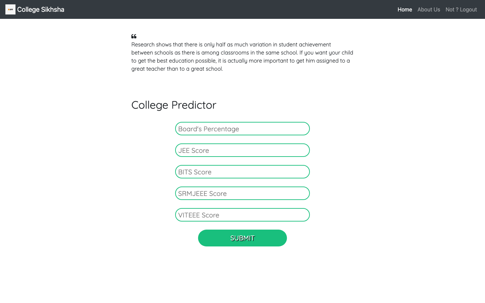
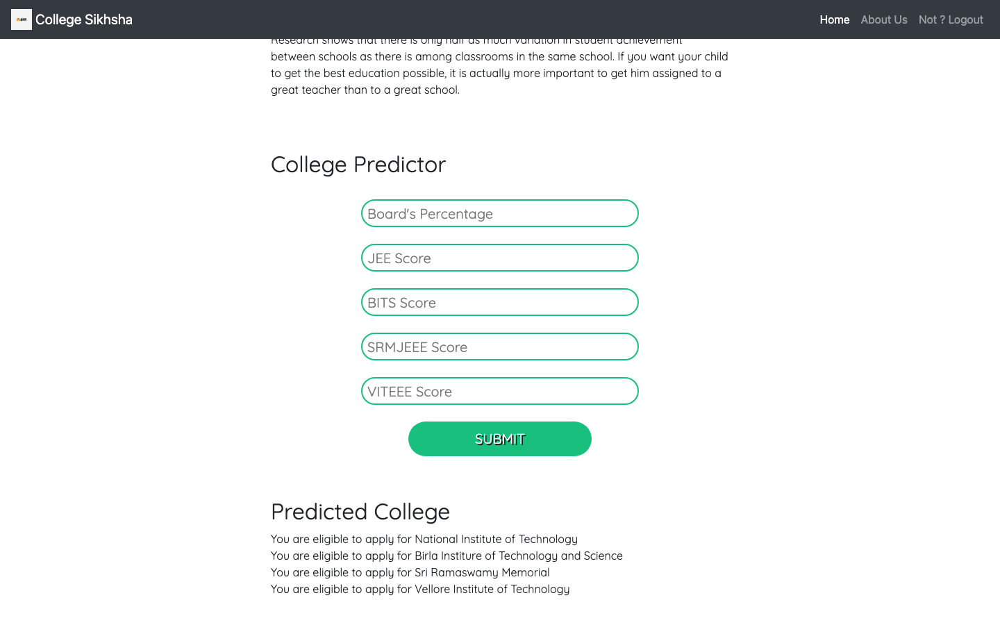

College Siksha
A college predictor website. A student enters their board percentage and entrance exam scores, and the site tells them which well-known engineering colleges they may be eligible to apply to. Inspired by the College Shiksha education portal and built with PHP, HTML, CSS and Bootstrap.

At a glance
The Project in Numbers
The problem
Why It Exists
After the board exams and the entrance tests, students are left with a pile of scores and a simple question: where can I apply? The answer is spread across many college websites, each with its own cut-offs. This project puts the basic check in one place.
Too many cut-offs
Each college group publishes its own score requirements, which is a lot for a student to track at once.
A quick first answer
Enter your scores once and see at a glance which colleges are worth a closer look.
Accounts for visitors
Students can create an account and log in, so the site can recognise who is using it.
A guide, not a guarantee
The result is a first indication based on simple score rules. Real admissions depend on each college's official process.
What it does
How It Works
The idea is simple: type in your scores and let the site check them against the college rules.
Step 1 and 2
Enter Your Scores, See Your Colleges
Where can I apply?
On the home page a student types in their board percentage and their JEE score, and can add scores for BITS, SRMJEEE and VITEEE if they took those exams. After pressing Submit, a "Predicted College" list appears right under the form.
- Board percentage and JEE score are required
- The other three exam scores are optional
- Results appear instantly, on the same page

The logic
How the Prediction Works
There is no machine learning here. The site follows clear, simple rules. First it makes a combined score for the IITs and NITs, where the board percentage counts for 60% and the JEE score, converted to a percentage of 360, counts for 40%. The other colleges look at their own exam score directly. A board percentage below 60 means the site tells the student that colleges will not accept their application.
| College group | Score used | Eligible when |
|---|---|---|
| IITs | Combined score | Above 87 |
| NITs | Combined score | Above 60 (and up to 87) |
| BITS | BITS score | Above 280 |
| SRM | SRMJEEE score | Above 140 |
| VIT | VITEEE score | Above 80 |
Accounts
Login and Sign Up
Visitors can create an account and log in. Accounts are stored in a MySQL database, and the signed-in username is shown in the top bar, next to the Logout link.
Accounts
Sign In to the Site
How do visitors get in?
The login form takes a username and password. New visitors choose Sign Up and set a username and password, and the site checks that the two passwords match before saving the account.
- Login and sign-up on a single page
- Accounts stored in a MySQL database
- The username appears in the top bar once signed in
The site
Pages and Features
Three pages, all sharing the same top bar with the site name and links.
Home and predictor
The College Predictor form and its result, with a short quote on education at the top.
Login and Sign Up
Account creation and sign-in, backed by a MySQL database.
About Us
A page about the College Shiksha portal and the kind of help it gives students.
Responsive design
Built with Bootstrap so the layout adjusts to different screen sizes.
The build journey
Phase by Phase
The project was built in five phases, from the first pages in May 2023 to the finished write-up in March 2025.
Designing the Pages
May 2023
Created the HTML and CSS for the home page, the login page and the About page, and the shared top bar.
Building the Predictor
May 2023
Wrote the PHP that reads the scores, applies the college rules and prints the predicted colleges.
Adding Accounts
May 2023
Added login and sign-up pages that store and check users in a MySQL database.
Making It Look Right
March 2024
Refined the styling of the home and login pages.
Writing It Up
March 2025
Added a README explaining the features, the college rules and how to run it with XAMPP.
Under the hood
Tech Stack
HTML5
CSS3
PHP
Bootstrap
MySQL
XAMPP